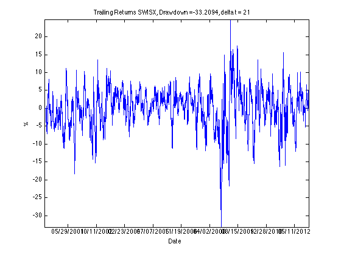

clear, clc
str = 'SWISX';
fileID = fopen([str '.csv']);
C = textscan(fileID, '%s%*f%*f%*f%f%*f%*f','HeaderLines',1,'Delimiter',',');
fclose(fileID);
date = C{1,1};
date_format= 'yyyy-mm-dd';
date=datenum(date,date_format);
closing = C{1,2};
date=flipud(date);
closing=flipud(closing);
delta_t = 21;
for m = delta_t:numel(date, :, 1)
Returns(m) = (closing(m)-closing(m-delta_t+1))/closing(m-delta_t+1)*100;
end
drawdown=min(Returns(:))
plot(date, Returns)
title(['Trailing Returns ' str ', Drawdown =' num2str(drawdown) ',delta t = ' num2str(delta_t)])
ylabel('%')
xlabel('Date')
datetick('x','mm/dd/yyyy', 'keepticks')
hold
axis ([min(date(:)) max(date(:)) min(Returns(:)) max(Returns(:))])
drawdown =
-33.2094
Current plot held
